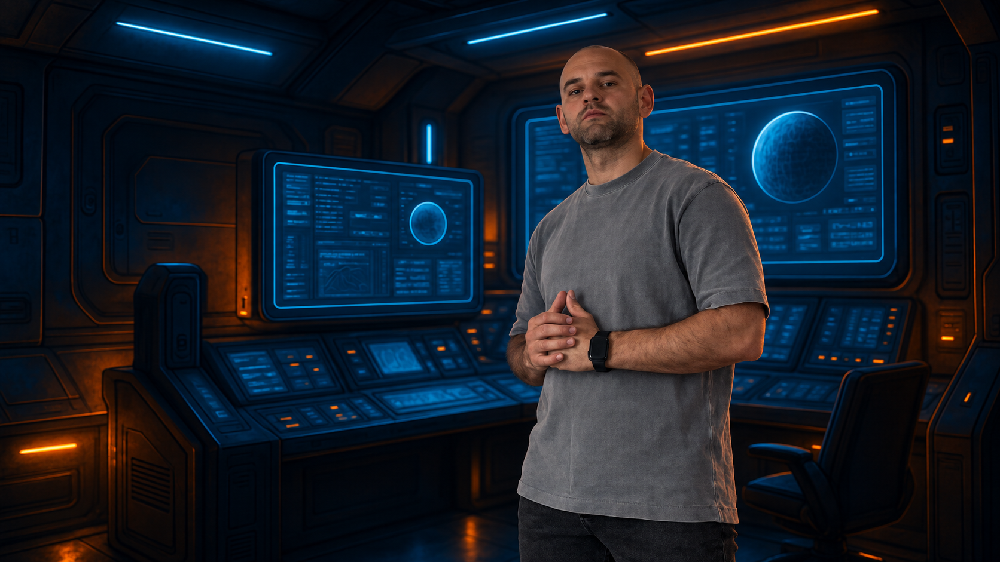

A recognisable signature
The orange phoenix, dark palette and Audiowide headings give the studio a consistent visual presence across its pages.
A personal design language, built into a working studio website. A NASA-punk interface that brings services, selected work and client enquiries into one place.
Goluza Interface Studio is my own platform for presenting web design and practical AI services. It needs to introduce the person behind the work, explain what the studio offers and help a potential client take the next step.
The design challenge is balancing a distinctive sci-fi identity with familiar website tasks: understanding services, exploring projects and making an enquiry. The visual world should invite exploration while those routes remain clear.
The NASA-punk direction runs through dark environments, orange signals, technical framing and console-inspired language. The studio’s phoenix mark ties the interface together, while the content keeps the focus on the work and the person creating it.
The orange phoenix, dark palette and Audiowide headings give the studio a consistent visual presence across its pages.
Service sections, project cards and prominent actions give visitors distinct places to explore work or start a conversation.
Space-inspired imagery, framed panels and small interface effects carry the mission-control theme beyond the opening screen.

The homepage brings the service offer, selected projects and enquiry routes into a single browsing journey. Visitors can explore at their own pace or go directly to a project request.
The site uses HTML for page structure, shared CSS for its visual system and responsive layouts, and JavaScript for interactive behaviour. It is hosted on Hostinger, with separate pages and an existing library of brand and project assets.
The homepage connects to focused project questionnaires, a contact form and consultation booking. Its metadata and structured business information provide a foundation for how the studio is described to search engines.
This case-study page extends that architecture with semantic sections, keyboard-visible links, a responsive reading layout and direct routes back to the wider site.
The result is a working home for the studio’s identity, services, selected projects and enquiry channels. The website also serves as a direct example of the visual design and custom development approach behind the studio.
Live and evolving. The portfolio continues to develop as projects are documented and new work is ready to share.
Explore the live studio website or get in touch to discuss the goals, audience and direction of your own project.